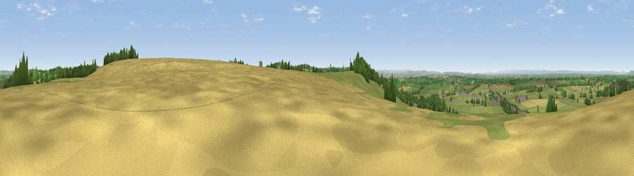

Viewpoint near Hinton
#15656 in England · top 21% of its area beats it · near HintonWhere it is
The exact computed spot (ST 74325 77425). Click the marker for map links.
The view, rendered

A 360° render of this exact spot computed from the terrain model, tree cover and land cover — summer colours, afternoon light, calibrated against photographs of famous viewpoints. Real trees, hedges and buildings will differ in detail.
The panorama
Grey silhouette: terrain skyline in each direction (720 bearings, Earth curvature and refraction included). Dashed green: skyline with trees (+15 m) and buildings (+8 m) as obstacles. Blue strip: how far the ground is visible on each bearing.
Where the view opens
Wedge length = distance to the farthest visible ground on that bearing (vegetation-aware). Rings at 10, 25 and 50 km.
What fills the view
73% grassland · 11% woodland · 11% cropland · 5% built-up
Angular shares of the visible panorama (visual magnitude), not map area. Landscape diversity 0.37 (0–1 Shannon).
Key numbers
More beautiful places nearby
The staircase of upgrades: each row has a higher view potential than everything closer. Driving times are estimates from straight-line distance, calibrated against real road routing — check an actual route before setting out.
| Place | Direction | Drive | Score |
|---|---|---|---|
| Viewpoint near Hinton | SSW · 1 km | ~3 min | 57.2 |
| Viewpoint near Hinton | ENE · 1 km | ~3 min | 65.9 |
| Hanging Hill | SSW · 8 km | ~16 min | 76.4 |
| Viewpoint near Stinchcombe | N · 21 km | ~35 min | 80.5 |
| Nottingham Hill | NNE · 56 km | ~78 min | 80.9 |
| Garway Hill | NNW · 57 km | ~79 min | 84.6 |
| Millennium Hill | N · 62 km | ~85 min | 86.9 |
| Worcestershire Beacon | N · 68 km | ~91 min | 87.1 |
51.49518, -2.37123 · source: screening · position refined by local search. Computed location — check access rights before visiting.